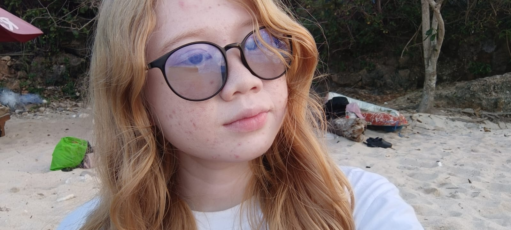

Halo! Nama saya Ni Made Nadia Anjani, seorang mahasiswa semester 3 di ITB STIKOM Bali,
yang saat ini sedang menempuh studi di bidang Teknologi Informasi.
Saya memiliki ketertarikan yang mendalam terhadap dunia IT, terutama dalam menemukan solusi-solusi kreatif yang dapat diterapkan untuk mengatasi berbagai tantangan teknologi.
Dorongan untuk terus belajar dan berkembang telah menjadi motivasi utama saya dalam menjelajahi setiap peluang dan ide baru yang dapat memperkaya pemahaman saya tentang teknologi modern.
Saya percaya bahwa pengalaman langsung dan eksplorasi mandiri sangat penting dalam membangun dasar yang kuat untuk karier di bidang IT.
Membaca adalah salah satu kegiatan favorit saya, yang tidak hanya menjadi sarana untuk bersantai
tetapi juga sumber inspirasi yang tak ada habisnya. Melalui membaca, saya menemukan banyak perspektif baru dan ide-ide segar yang sering kali
membantu saya dalam menghadapi tantangan kreatif. Saya yakin bahwa keseimbangan antara pengetahuan teknis dan wawasan dari berbagai bacaan adalah kunci untuk menjadi individu yang lebih holistik dan inovatif.
Saya selalu terbuka untuk berkolaborasi dan berdiskusi, terutama tentang topik-topik terkait teknologi,
inovasi, atau bahkan literatur. Bagi saya, setiap percakapan adalah kesempatan untuk belajar lebih banyak dan memperluas jaringan dengan orang-orang yang memiliki visi serupa.
Saya sangat antusias untuk terus berkembang dan mencari peluang baru di dunia yang serba digital ini.